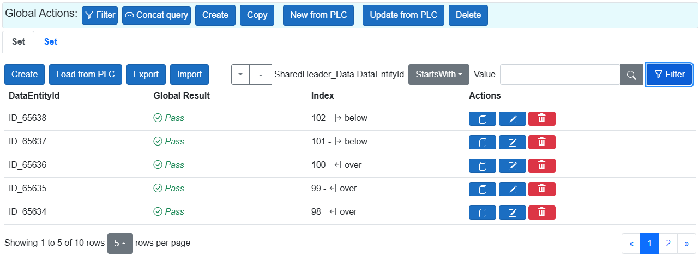

📦 Distributed Data View (Blazor)

The DistributedDataView is dynamic component for dispalying data from IDistributedDataExchangeService in a Blazor application.
Usage (Blazor)
<DistributedDataView Presentation="Command"
GroupName="default"
ConfigSuffix=""
DisplayOnePerDataType="true"
EnableCreate="true"
EnableDelete="true"
EnableCopy="true"
EnableFiltering="true"
EnableSorting="false"
EnableExport="true"
EnableSendToPlc="true"
EnableCreateNewFromPlc="true"
/>
Parameters:
GroupName: Group of data fragments to display ("default").
ConfigSuffix: Enable extend the name of AxoDataExchange configuration for the same type (Usable in a case, you need special columns,sorting ...).
Presentation: Data rendering mode ("Command", "Status", etc.).
EnableExport: Allows exporting data from fragments.
EnableSorting: Enables sorting in .
DisplayOnePerDataType: Only one fragment per DataExchange type.
Prerequisites (.Net)
Register services
Register services in your 'Program.cs' file
// DistributedDataExchangeService - will handle all instances of IAxoDataExchanges
var distributedDataService = new DistributedDataExchangeService();
builder.Services.AddSingleton<IDistributedDataExchangeService>(distributedDataService);
// AxoDataExchangeConfigurationService - handle configuraion for any IAxoDataExchange
var exchangeConfigurationService = new AxoDataExchangeConfigurationService();
builder.Services.AddSingleton<IAxoDataExchangeConfigurationService>(exchangeConfigurationService);
Collect AxoDataExchanges
// You can manually add AxoDataExchanges to the service:
// distributedDataService.Add(Entry.Plc.Ctx.AxoDataDistributedContext.ControlledUnit_1.ProcessData, new() { "default" });
// distributedDataService.Add(Entry.Plc.Ctx.AxoDataDistributedContext.ControlledUnit_1.EntityHeader, new() { "default" });
// ...
// Or collect them automatically using reflection:
distributedDataService.CollectAxoDataExchanges(Entry.Plc.Ctx.AxoDataDistributedContext.ControlledUnit_1);
distributedDataService.CollectAxoDataExchanges(Entry.Plc.Ctx.AxoDataDistributedContext.ControlledUnit_2);
Ordering AxoDataExchanges
To define the main exchange for a group, use the following code in your Program.cs:
//Set up prioritized exchange type
distributedDataService.SetPrioritizedType(typeof(Pocos.AxoDataDistributedExample.SharedHeader_Data));
// sort all collected groups
distributedDataService.SortGroupsByPriorizedTypes();
Fill up exchange configuration
exchangeConfigurationService.AddConfiguration<Pocos.AxoDataDistributedExample.SharedHeader_Data>(
suffix: "",
configAction: a =>
{
a.AddColumn("Global Result", x => x.HeaderGlogalPass, true, typeof(CustomBoolTemplate))
.AddColumn("Index", x => x.HeaderIndex, false, typeof(CustomIntTemplate))
.EnableSorting()
.AddSorting(x => x.HeaderPartialName);
});
exchangeConfigurationService.AddConfiguration<Pocos.AxoDataDistributedExample.Station_Data>(
suffix: "",
configAction: a =>
{
a.AddColumn("Station Result", x => x.StationPass, true, typeof(CustomBoolTemplate))
.AddColumn("Name", x => x.StationName, true, null)
.AddColumn("Operation", x => x.StaionOperation, true, null)
.EnableSorting();
});
Prerequisites (Ax)
To enable automatic collection of data exchanges, you must use the appropriate attribute in your PLC code, like this:
{#ix-attr:[AXOpen.Data.DistributedDataAttribute("default", "headers")]}
EntityHeader : SharedHeader_Manager;
{#ix-attr:[AXOpen.Data.DistributedDataAttribute("default", "headers")]}
ProcessData : StationData_Manager;